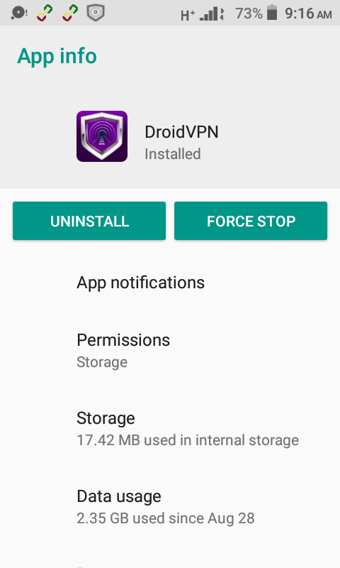
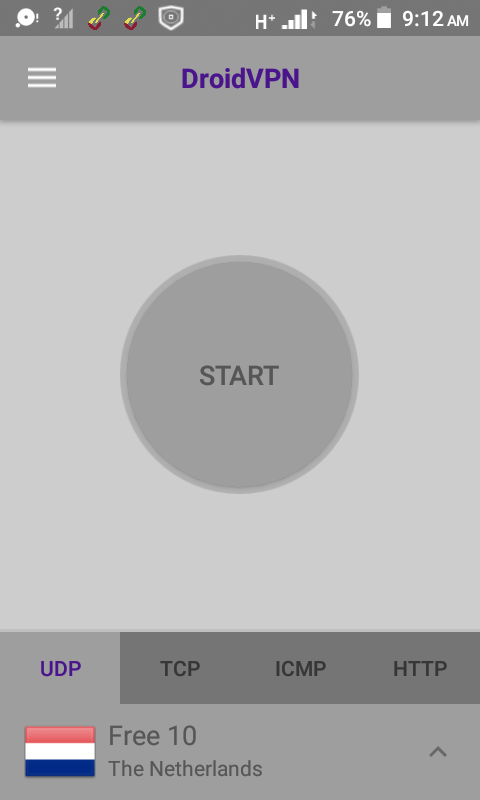
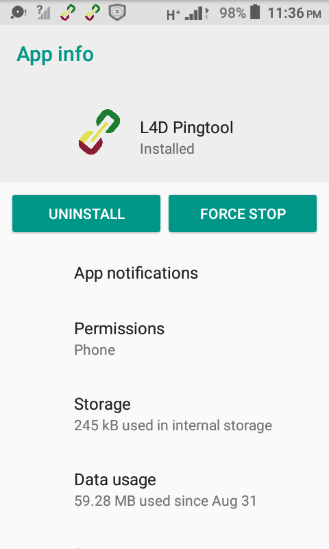
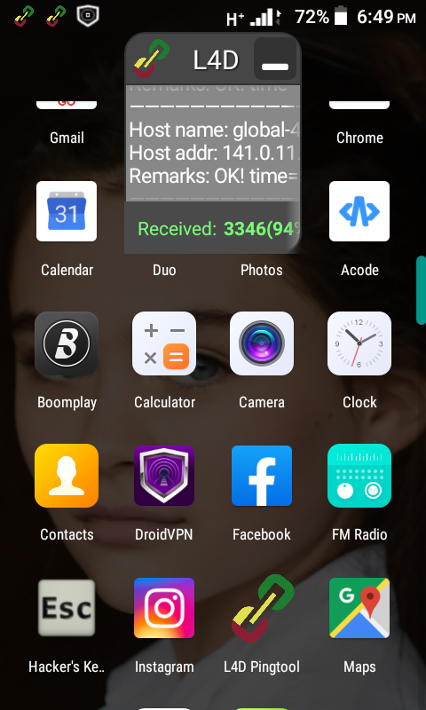

FREE INTERNET.
How To Get Free Internet.
In this tutorial,I'm going to let you know how to get free internet.Before you follow the steps below,make sure you have mobile data and your internet or data connection is turned on.
Using Droid VPN.
STEP 1; Install The App.
Install the app named Droid VPN from Google Play Store or App Store.

STEP 2; Enter In Settings.
Open Droid VPN,click the menu icon on the top left hand corner of your screen.Then click Settings;click UDP Settings.
- Click Remote UDP Port and type in 443 and then click ok.
- Click Local UDP Port and type in 8080 and then click ok.
- Disable Auto Port Scan.
- Click Choose UDP Mode and then enable Mode 1.
- Click Tcount and type in 4500 then click ok.
- Click Rcount and type in 5555 then click ok.
- Then click the Back button.
Then click VPN Connection Settings.
- Enable the first four; Run as root,Use VPN Service API,Enable compression and Bypass VPN for local networks.
- Click Tunnel MTU Size and type in 1024 and then click ok.
- Disable Auto minimize.
- Enable Auto-Connect VPN and Auto-reconnect.
- Click Auto Connect/Reconnect on and then enable Wifi+Mobile.
- Disable Load and configure TUN mode and Fix TUN Ownership.
- Enable Fix HTC Routes.
- Then click the Back button twice.
STEP 3; Create An Account.
Click the menu icon on the top left hand corner of your screen,then click Account.
- Click the SIGNUP FOR FREE button and then follow the procedures.
- A message will be sent to your email account for you to activate your Droid account before you start using it.
- Open gmail app and activate your Droid VPN account.
- After that open droid VPN,click menu icon,click Account fill in your user name and password.

- After all that, at the bottom of your screen there is UDP,TCP,ICMP and HTTP,tap on UDP.
- Then click on the arrow on the bottom right hand corner of your screen and select any free server to use from Free 1-Free 24.
- Then click the Back button and click start and if it connects,you will be able to enjoy free internet.
NOTE: Even if you don't have mobile data for example 0MB,for the Droid VPN to connect you must turn on the internet or data connection.
HOW TO STABLIZE THE CONNECTION OF DROID VPN.
In most cases,the connection of Droid VPN is unstable since it connects through open UDP ports.So in that same knowledge,there are some applications that can stablize its connection namely; L4D pingtool,termux but let me teach you the use of L4D pingtool because its even the simplest.
Using L4D Pingtool
DOWNLOAD APP


After successful download,open L4D pingtool;it will float on your screen;minimize it by clicking the negative sign (-) on the top right hand corner.Then open Droid VPN;click start and enjoy long lasting connection.